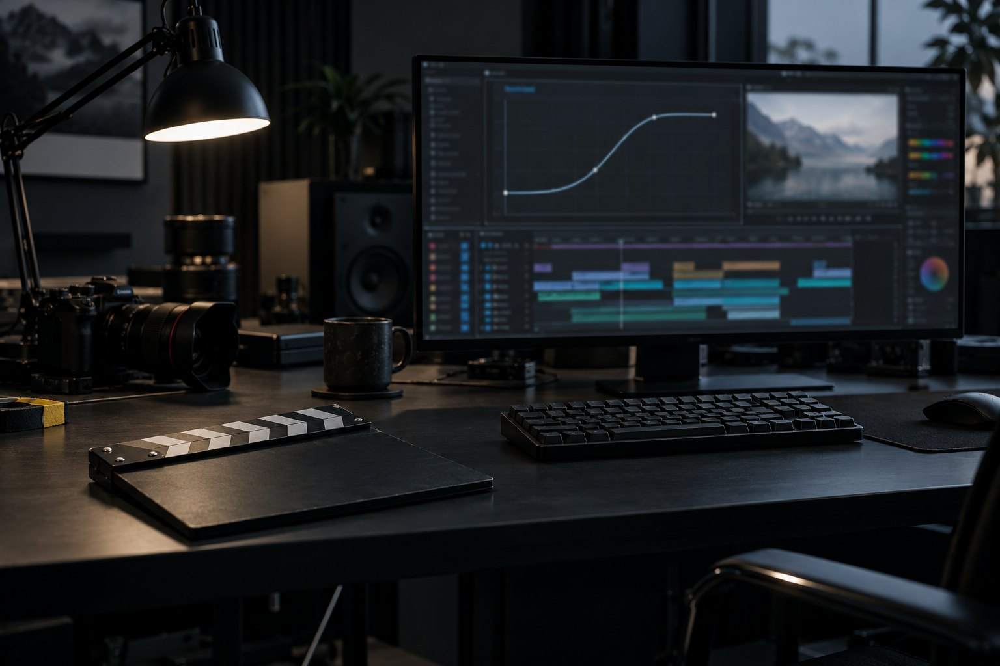

E1 · Primeiro MP4 em React
10 minRode o bloco "instalar, renderizar e conferir".
Pronto quando: npm: 0, render: 0 e OK: 5,0 s · 1920×1080 · 30 fps · sem áudio com saída: 0.
Aula 5 · 15 min
Remotion faz o mesmo que o HyperFrames com outra linguagem: cada quadro é um componente React que recebe o número do quadro. interpolate mapeia quadros em valores e spring dá física à entrada. Nesta aula você renderiza a mesma ideia da aula 2 em React, lê a licença e decide quando cada motor vale mais.
Começar a aula
Objetivo: renderizar uma composição Remotion com interpolate e spring e decidir entre Remotion e HyperFrames.
Clique em cada peça. Compare com o diagrama da aula 1: é o mesmo desenho em React.
HyperFrames: tempo em segundos e GSAP. Remotion: tempo em quadros e React.
Título com spring, filete e subtítulo com interpolate. O package.json fixa remotion 4.0.537 (npm, 19/10/2026).
import {AbsoluteFill, Composition, Easing, interpolate, registerRoot, spring, useCurrentFrame, useVideoConfig} from 'remotion';
// Tudo é função do quadro atual: o mesmo quadro desenha sempre a mesma imagem.
const Abertura: React.FC = () => {
const frame = useCurrentFrame();
const {fps} = useVideoConfig();
// spring: entra com física (0 → 1), começando no quadro 10
const entra = spring({frame: frame - 10, fps, config: {damping: 200}});
// interpolate: mapeia quadros para valores; clamp segura o valor nas pontas
const apoio = interpolate(frame, [30, 50], [0, 1], {extrapolateLeft: 'clamp', extrapolateRight: 'clamp'});
const barra = interpolate(frame, [20, 60], [0, 640], {
extrapolateLeft: 'clamp',
extrapolateRight: 'clamp',
easing: Easing.inOut(Easing.cubic),
});
return (
<AbsoluteFill style={{background: '#0c0c10', justifyContent: 'center', paddingLeft: 200, fontFamily: 'system-ui, sans-serif'}}>
<h1 style={{color: '#f4f4f5', fontSize: 120, lineHeight: 1.1, margin: 0, opacity: entra, transform: `translateY(${(1 - entra) * 60}px)`}}>
Vídeo é React
</h1>
<div style={{width: barra, height: 6, background: '#e9b949', margin: '36px 0'}} />
<p style={{color: '#a1a1aa', fontSize: 48, margin: 0, opacity: apoio}}>Um componente, um quadro, um MP4.</p>
</AbsoluteFill>
);
};
const Raiz: React.FC = () => (
<Composition id="Abertura" component={Abertura} durationInFrames={150} fps={30} width={1920} height={1080} />
);
registerRoot(Raiz);{
"name": "abertura-remotion",
"private": true,
"description": "Ensaio do curso Motion por código com agente (INEMA.CLUB): uma composição Remotion mínima.",
"scripts": {
"render": "remotion render src/index.tsx Abertura out/abertura.mp4"
},
"dependencies": {
"@remotion/cli": "4.0.537",
"react": "19.3.1",
"react-dom": "19.3.1",
"remotion": "4.0.537"
}
}K=~/projetos/formacao-cinema-ia-motion-v72/kit
E=${TMPDIR:-/tmp}/ensaio-motion/a5; rm -rf "$E"; mkdir -p "$E/remotion"
cp -r "$K"/remotion/{package.json,package-lock.json,src} "$E/remotion/"; cd "$E/remotion"
npm ci --no-audit --no-fund > npm.log 2>&1; echo "npm: $?"
npx remotion render src/index.tsx Abertura out/abertura.mp4 --concurrency=2 > render.log 2>&1
echo "render: $?"
python3 "$K/conferir.py" out/abertura.mp4 5 1920x1080; echo "saída: $?"npm: 0 render: 0 OK: 5,0 s · 1920×1080 · 30 fps · sem áudio saída: 0
O npm ci instala 245 MB em node_modules (medido nesta máquina). O primeiro render pode baixar o navegador que o Remotion usa.
Pedir o render com o id em minúscula.
cd ${TMPDIR:-/tmp}/ensaio-motion/a5/remotion
npx remotion render src/index.tsx abertura out/errado.mp4 2>&1 | grep -m1 -o "Could not find composition.*"
echo "render: ${PIPESTATUS[0]}"npx skills add remotion-dev/skills
Could not find composition with ID abertura. Available compositions: Abertura render: 1
O id diferencia maiúscula de minúscula. A mensagem lista os ids que existem: copie de lá.
O que ler antes de usar num projeto de empresa.
O LICENSE.md do Remotion libera o uso grátis para pessoa física, organização sem fins lucrativos e empresa de até 3 pessoas; acima disso, a empresa precisa da licença paga.
O HyperFrames é Apache-2.0: uso livre, inclusive comercial.
A página de migração do Remotion 5.0 cita uma mudança de licença (contratados passariam a contar no time). Em 19/10/2026 a 5.0 não tinha saído e a regra não estava confirmada: releia o LICENSE.md quando atualizar.
Equipe que já escreve React, componentes reaproveitados de um app, dados passados por props, vídeo gerado dentro de um produto em React.
Peça que um agente escreve do zero, sem build; check com layout e contraste embutido; snapshot de quadros; TTS e transcrição locais no mesmo CLI (aula 7).
O ensaio, o erro e uma mudança sua.
Rode o bloco "instalar, renderizar e conferir".
Pronto quando: npm: 0, render: 0 e OK: 5,0 s · 1920×1080 · 30 fps · sem áudio com saída: 0.
Rode o bloco do id errado.
Pronto quando: Could not find composition with ID abertura. Available compositions: Abertura e render: 1.
Em /tmp/ensaio-motion/a5/remotion/src/index.tsx, mude durationInFrames para 180 e o easing da barra para Easing.out(Easing.exp). Renderize de novo com o mesmo comando do bloco.
Pronto quando: python3 ~/projetos/formacao-cinema-ia-motion-v72/kit/conferir.py out/abertura.mp4 6 1920x1080; echo "saída: $?" → OK: 6,0 s · 1920×1080 · 30 fps · sem áudio e saída: 0.
A explicação aparece depois da sua resposta.
Pergunta 1 de 4
durationInFrames={150} a fps={30} dá quantos segundos?
Pergunta 2 de 4
Para que serve o extrapolateRight: 'clamp' no interpolate?
Pergunta 3 de 4
Uma empresa de 12 pessoas quer usar o Remotion 4 em vídeos de cliente. O que fazer antes?
Pergunta 4 de 4
Quando o Remotion costuma valer mais que o HyperFrames?
Escolha uma alternativa. A explicação aparece depois da sua tentativa.